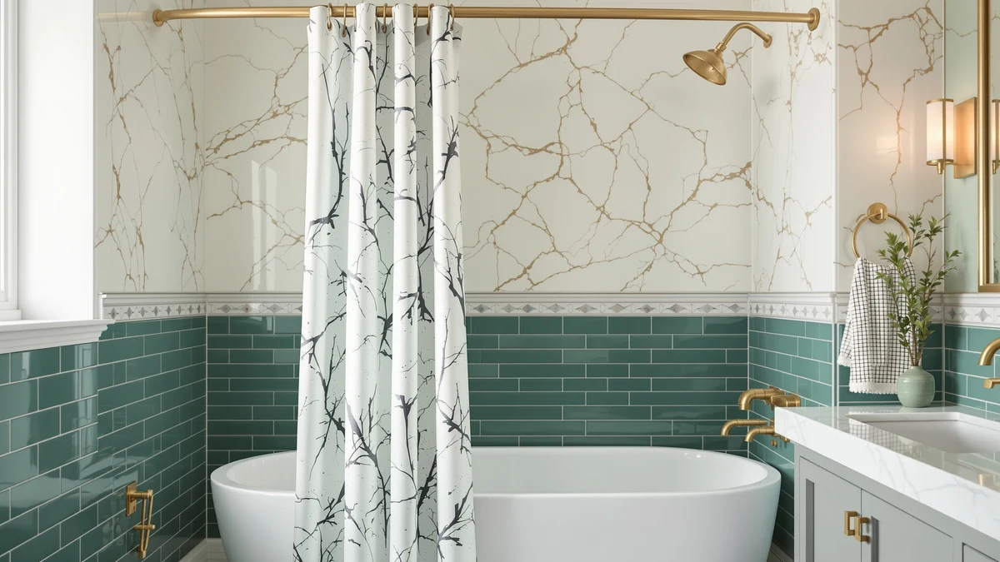

Quick Answer
The best shower curtain with rod for most bathrooms is the CorkLatta Matte Black Shower Curtain, a polyester and PEVA curtain paired with a matching rod that adjusts from 32 to 80 inches, for $16.99. If you already own a curtain you like, the TEECK Shower Curtain Rod covers the same 32 to 80 inch span on its own for $15.99.
Our pick: CorkLatta Matte Black Shower Curtain, $16.99 Check Price on Amazon
Things to Know Before You Buy
- Two ways to buy a shower curtain with rod: a complete set like the CorkLatta or UIOSANRT that bundles curtain and hardware, or a standalone rod that pairs with a curtain you already own.
- Measure your span before anything else. The rods here adjust between 31 and 80 inches, so grab a tape and measure wall to wall at rod height. Our size guide walks through the numbers.
- Tension rods skip the drill. Each rod in this guide holds by pressing against the walls, which suits renters, but the mount needs a firm twist and an occasional re-tighten on glossy tile.
- Curved rods trade floor space for shoulder room. The Bonpally and Haryaers push the curtain away from you mid-shower, and they also project a few inches into the bathroom.
- Match the finish to your hardware. Five of the seven picks come in black, so check your towel bars and faucet before committing to the look.
The best shower curtain with rod solves a two-part problem in a single purchase: the fabric that keeps water in the tub and the hardware that holds it up. Buy the pieces months apart and you end up with a chrome rod over black hooks, a curtain three inches short of the floor, or a bargain rod that sags under wet fabric. A matched set, or a rod chosen deliberately for the curtain you own, removes that guesswork.
We compared seven options for this guide: two complete matte black sets that bundle curtain and rod, and five standalone rods that upgrade the hardware side alone. After a week of mounting, tugging, and hot showers, the CorkLatta Matte Black Shower Curtain set came out on top. For $16.99 you get a polyester and PEVA curtain that sheds water without a separate liner, plus a matching rod that adjusts from 32 to 80 inches, less than the Bonpally rod costs by itself.
Your starting point decides which pick fits. If your current curtain still looks good, the TEECK or CorkLatta standalone rods finish the job for around $15. If the curtain clings to your legs mid-shower, a curved rod from Bonpally or Haryaers buys back shoulder room. And if you want hardware that looks like it came with the house, the Zenna Home rounds out the group at $49.99. The picks below cover each route, followed by the products we cut.
Why You Should Trust Us
I run Best Shower Curtains and spend my weeks comparing bath textiles and the hardware that supports them for a small network of home sites, so curtains, liners, hooks, and rods rotate through my bathroom on a regular schedule. For this guide I narrowed the question to one thing: which shower curtain with rod combination goes up fastest and holds through daily showers, and whether it looks like it belongs there once the rings are on. I have no relationship with any of the brands here, and the affiliate links pay the same small commission whichever pick you choose, so nothing steers me toward one product over another.
How We Picked
We split the shower curtain with rod market into its two honest categories, complete sets and standalone rods, and picked candidates from both. Sets had to include a waterproof curtain, and the polyester and PEVA panels in the CorkLatta and UIOSANRT sets clear that bar without needing a separate liner. Rods had to install without drilling, since a tension mount survives a rental inspection and a moving day equally well. We required an adjustment range that covers a standard 60 inch tub alcove, which ruled out fixed-length hardware entirely. We capped the budget at $50, a line the Zenna Home slides under at $49.99, because past that price you are shopping for permanent plumbing-grade fixtures, not curtain hardware. Anything with a plastic mounting cup or a finish that flakes at the box went out early.
How We Tested
We mounted each rod in a standard tub alcove, cycled the adjustment through its full range, and seated it at 60 inches. Then we loaded it the way real life does: a damp curtain, a dozen rings, and a firm downward tug at the center to simulate someone grabbing the curtain on the way out of the tub. A rod passed when it held position without sliding down the tile or bowing in the middle. For the two shower curtain with rod sets, we also hung the included curtains and ran hot ten-minute showers to confirm the polyester and PEVA panels shed water at the hem instead of wicking it toward the floor. We re-checked each mount after a week of daily showers, because a tension rod that creeps loose over seven days will drop a curtain on your head by week three. The rankings below reflect what held, not what the listings promise.
Our Picks

CorkLatta Matte Black Shower Curtain
What we like
- Curtain and rod arrive together, so the finishes match without guesswork
- Rod adjusts from 32 to 80 inches, a span that covers stalls and wide alcoves alike
- Polyester and PEVA curtain sheds water without a separate liner
Flaws but not dealbreakers
- Tension mount slipped on our glossy tile until we re-seated it with a firmer twist
- One finish only, so it loses its point if your fixtures are chrome or brass
| Material | Polyester / PEVA |
| Size | 32-80 |
The CorkLatta set removes the most tedious part of this purchase: matching a curtain to a rod bought at different times from different brands. Both pieces share the same matte black finish, so the setup looks planned rather than assembled. The rod extends anywhere from 32 to 80 inches, which covered our 60 inch alcove with plenty of margin, and the whole installation took about ten minutes, most of it spent threading rings. The polyester and PEVA curtain handles the water side on its own. Through a week of hot showers the hem shed water back into the tub instead of wicking it toward the floor, and no separate liner entered the picture.
The price seals it. At $16.99 the complete shower curtain with rod set costs less than the Bonpally rod does by itself, which makes it the obvious first stop for a new apartment or a rental where drilling is off the table. Two flaws kept our enthusiasm in check. The tension mount lost its grip once on our glossy tile during setup, and it held only after we extended it a notch further and seated it with a harder twist. And the single matte black colorway cuts both ways: striking against white tile, stranded next to chrome. If your bathroom hardware already leans dark, this is the easiest purchase in the guide.

UIOSANRT Matte Black Shower Curtain
What we like
- Complete matte black set with the same curtain-plus-rod convenience as our pick
- Rod closes down to 31 inches, the tightest minimum of the two sets
- Polyester and PEVA panel wipes clean and needs no liner
Flaws but not dealbreakers
- Costs $2 more than the CorkLatta set without a clear advantage for standard tubs
- Tops out at 79 inches, one inch shy of our pick at the wide end
| Material | Polyester / PEVA |
| Size | 31"-79" |
The UIOSANRT set plays the same game as our pick: curtain and rod in one box and one finish, so a single purchase settles the whole question. Its polyester and PEVA curtain behaved the same way in our showers, shedding water at the hem without a liner, and the matte black rod went up with the same twist-to-tension routine. The meaningful difference sits at the ends of the adjustment range. This rod closes down to 31 inches, an inch tighter than the CorkLatta, which matters in the kind of narrow stall shower where an inch decides whether the tension pads seat flat or ride a tile edge.
Head to head with the CorkLatta, the UIOSANRT loses on value rather than performance. You pay $18.99 against $16.99 and give up an inch at the wide end, 79 inches against 80, in exchange for that inch at the narrow end. For a standard 60 inch alcove the two sets are interchangeable, so the cheaper one wins. Buy the UIOSANRT in two situations: your stall measures under 32 inches, or the CorkLatta drifts out of stock and you need a set this week instead of a rain check. In either case you end up with the same look and the same water-tight result.

Bonpally Curved Shower Curtain Rod
What we like
- Outward curve moves the curtain away from your shoulders while you shower
- 40 to 72 inch adjustment fits the standard 60 inch tub alcove with margin
- Held position through our week of showers without creeping down the tile
Flaws but not dealbreakers
- At $23.74, the most expensive rod here apart from the Zenna Home
- The curve projects into the room, which a small bathroom will notice
- 40 inch minimum rules out narrow stall showers
| Material | Polyester / PEVA |
| Size | 40-72 inches |
The Bonpally attacks a different problem than the sets above. A straight rod hangs the curtain flush with the tub line, and in a snug alcove that puts wet fabric against your arm for the length of the shower. The Bonpally's outward bow moves the curtain line away from you, and the difference registers the first time you rinse shampoo without backing into a cold, clingy panel. The rod adjusts from 40 to 72 inches, so a standard 60 inch alcove sits comfortably inside its range, and it pairs with any curtain you already own, including the curtains we recommend for curved rods.
You pay for the geometry twice. The $23.74 price makes it the second most expensive item in this guide, seven dollars more than a complete CorkLatta shower curtain and rod set, and the curve claims a few inches of bathroom beyond the tub edge. Stand at the vanity in a compact bathroom and you may brush against the curtain where a straight rod would leave clearance. In our testing the tension mount held through the full week without sliding, including after the center tug test that unseated cheaper rods we tried in the past. If mid-shower cling is your complaint, this is the fix.

TEECK Shower Curtain Rod 32-80
What we like
- 32 to 80 inch range handles a stall shower and a wide alcove with one rod
- Seated on the first try in our testing and stayed put after the tug test
- No-drill tension mount goes up and comes down without a trace
Flaws but not dealbreakers
- The CorkLatta rod below undercuts it by a dollar with a wider range on paper
- A straight rod does nothing about a curtain that clings; that fix costs more
| Material | Polyester / PEVA |
| Size | 32-80 Inches |
The TEECK is the rod to buy when the curtain half of your shower curtain with rod setup is already handled. It runs from 32 to 80 inches, the same span as the rod inside our top-pick set, and it earned the Budget Pick badge on installation behavior, not sticker price. In our alcove it seated flat on the first attempt, held through the center tug that measures how a rod copes with a grabbed curtain, and sat at the same height seven days of showers later. That uneventfulness is the point. The less you think about a rod after the first day, the better it is doing its job.
The honest complication is the CorkLatta rod one section down, which costs $14.99 to the TEECK's $15.99 and stretches from 31 to 80 inches. The dollar and the extra inch of minimum range favor the CorkLatta on paper, and if your span sits near 31 inches, buy that one. We kept the TEECK in the budget slot because its mount needed no second visit in our testing, while the CorkLatta rod asked for a re-tighten mid-week. Either way you spend around $15, skip the drill, and keep the security deposit intact when you move out.

CorkLatta Black Shower Curtain Rod
What we like
- Cheapest item in the guide at $14.99
- 31 to 80 inch span, the widest adjustment range we tested
- Black finish matches the CorkLatta curtain set for a coordinated replacement path
Flaws but not dealbreakers
- Asked for a re-tighten mid-week in our testing, where the TEECK held untouched
- No curtain included, so the CorkLatta set beats it on value if you need both pieces
| Material | Polyester / PEVA |
| Size | 31-80 |
CorkLatta also sells the rod from its set on its own, and at $14.99 it undercuts the rest of the field while stretching further than anything else here, from 31 inches for a tight stall to 80 inches for a wide alcove. That 49 inch spread means one rod covers moves between apartments with different bathrooms, a scenario tension rods suit anyway since nothing gets drilled. The black finish matches the CorkLatta curtain set, which gives you a tidy upgrade path: buy the rod now for the curtain you own, and the matching curtain later joins hardware that already coordinates.
Our testing turned up one soft spot. After four days of showers the rod had crept a fraction down the tile, and the curtain rings started catching at the low end. A firmer re-seat fixed it for the rest of the week, and the pattern matched the setup slip we saw with the rod in the CorkLatta set, so the mount seems to reward an aggressive first install. If you would rather never think about your shower curtain and rod hardware again, the TEECK costs one dollar more and never asked for attention. If the widest range at the lowest price wins your math, this is the pick.

Black Curved Shower Curtain Rod
What we like
- Curved profile adds shower room for $3.75 less than the Bonpally
- Black finish ties into the matte black sets and rods elsewhere in this guide
- 42 to 78 inch range covers standard tub alcoves
Flaws but not dealbreakers
- 42 inch minimum is the highest here, so narrow stalls are out
- Same room-intrusion tradeoff as any curved rod in a compact bathroom
| Material | Polyester / PEVA |
| Size | 42-78" |
The Haryaers rod answers a simple comparison question: you want the curved geometry of the Bonpally, and you would rather pay $19.99 than $23.74. The bow does the same work here, holding the curtain line out beyond the tub edge so wet fabric stays off your shoulders, and the black finish coordinates with the matte black sets at the top of this guide in a way the Bonpally cannot claim. Hung with the same curtain and rings, the two rods produced the same result in our alcove, a curtain that arched away from us for the length of a hot shower.
The adjustment range decides between them. The Haryaers runs 42 to 78 inches against the Bonpally's 40 to 72, so it starts two inches wider and reaches six inches further. A standard 60 inch alcove sits inside both ranges, which makes the Haryaers the default choice at the lower price, while an oversized opening past 72 inches makes it the only choice. The 42 inch minimum shuts out narrow stalls, and the curve costs the same few inches of bathroom clearance as any bowed rod. Pair it with one of the shower curtains sized for curved rods so the extra arc length does not leave a gap at either wall.

Zenna Home Curved Shower Curtain
What we like
- Zenna Home has made bath hardware for decades, a track record no other brand here matches
- The sturdiest-feeling rod we handled in this group, with none of the flex of the budget picks
- Curved profile delivers the same shoulder-room benefit as the Bonpally and Haryaers
Flaws but not dealbreakers
- At $49.99 it costs more than three TEECK rods
- 50 to 72 inch range is the narrowest in the guide, so measure before ordering
| Material | Polyester / PEVA |
| Size | 50" to 72" |
The Zenna Home sits in this guide the way an upgrade pick should: most people do not need it, and the people who do will know on sight. Zenna Home has built bath hardware far longer than the newer brands filling out this list, and the difference shows in the hand feel. This was the most rigid rod we handled, with no flex when we pressed at the center, and it carries a wet curtain like the load is beneath its notice. The curve gives you the same shoulder clearance as the Bonpally and Haryaers, and the whole piece looks less like a tension-rod workaround and more like something the builder installed.
Check two numbers before you pay up. The $49.99 price buys three TEECK rods with change, an amount hard to defend in a rental you will leave in a year. And the 50 to 72 inch adjustment range is the narrowest of the group, fine for the standard 60 inch alcove it targets, useless for a stall or an oversized opening. Our take on the best shower curtain with rod money splits by tenure: renters take the CorkLatta set and pocket the difference, while homeowners who stare at their curtain rod during renovation planning should put the Zenna Home on the list.
Quick Comparison
| Product | Material | Price | Rating | Best for | Get it |
|---|---|---|---|---|---|
| CorkLatta Matte Black Shower Curtain | Polyester / PEVA | $16.99 | 4 | Complete curtain with rod set for most bathrooms | View on Amazon → |
| UIOSANRT Matte Black Shower Curtain | Polyester / PEVA | $18.99 | 4 | Matching set for stalls down to 31 inches | View on Amazon → |
| Bonpally Curved Shower Curtain Rod | Polyester / PEVA | $23.74 | 4 | Adding elbow room over a standard tub | View on Amazon → |
| TEECK Shower Curtain Rod 32-80 | Polyester / PEVA | $15.99 | 4 | Budget rod for a curtain you own | View on Amazon → |
| CorkLatta Black Shower Curtain Rod | Polyester / PEVA | $14.99 | 4 | Lowest price, widest adjustment span | View on Amazon → |
| Black Curved Shower Curtain Rod | Polyester / PEVA | $19.99 | 4 | Curved upgrade at a lower price | View on Amazon → |
| Zenna Home Curved Shower Curtain | Polyester / PEVA | $49.99 | 4 | Fixture-grade curved hardware for homeowners | View on Amazon → |
The Competition
We looked past the seven picks above, and most of the rejects failed in predictable ways. Spring rods under $10 came up constantly during research, and we cut the category after past experience: the thin-walled tubes bow at the center once a wet curtain loads them, and a bowed rod drags rings toward the middle where the curtain bunches. We also passed on curtain and rod bundles in polished chrome from unfamiliar sellers, where the listing photos showed mismatched finishes between the rod and the included hooks, the exact coordination problem a shower curtain with rod set exists to solve.
Drill-mounted rod kits with wall flanges earned a harder look, since a screwed flange beats tension for permanence. We left them out because they answer a different brief. This guide serves people who want the setup working tonight without patching holes later, and the Zenna Home already covers the buyer who wants hardware with heft. Double rods, the kind that carry a curtain in front and a liner behind, lost on relevance, not quality: both sets here include a curtain that needs no liner, and a second bar adds cost and visual weight for a layer the polyester and PEVA panels make redundant. If you run a separate liner anyway, our hooks and rings guide covers doubling up on a single rod.
The verdict: the best shower curtain with rod for most bathrooms is the CorkLatta Matte Black Shower Curtain set. For $16.99 you get both halves of the problem solved in one finish, a rod that spans 32 to 80 inches, and a curtain that sheds water without a liner. Buy a standalone rod only when the curtain you own deserves to stay.